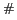
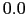
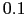
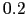

Next: Static Analysis Subsystems using Up: Static Analysis Subsystems for Previous: The Universes Typecheckers Contents
FreeBoogie aims to be a backend for verification tools such as Spec and future versions of ESC/Java and similar tools. It takes as input a BoogiePL (Boogie Programming Language) file, generates verification conditions, calls provers such as Simplify and Z3, and reports the errors in a way that relates to the BoogiePL source. It is a work in progress.
Version  supports parsing, name resolution, flowgraphs, and typechecking, but no verification condition generation. Version  handles the first version of BoogiePL. Version  will handle the second version of the Boogie language. More information can be found on the http://kind.ucd.ie/products/opensource/FreeBoogie/FreeBoogie websiteFreeBoogie websitehttp://kind.ucd.ie/products/opensource/FreeBoogie/.
The Spec system from Microsoft Research generates BoogiePL from the Spec language, which is a variant of Microsoft's C programming language with annotations. Another way of obtaining BoogiePL from a higher level language is via JACK [BBC+07a], which translates Java with JML annotations into a variant of BML, and B2BPL, which was developed at ETH under the MOBIUS project and translates BML into BoogiePL. In fact, one design goal of BoogiePL was to be used as an intermediate language by multiple verification tools, thereby reducing the implementation effort needed to support multiple high-level languages and multiple static analyzes at the same time.